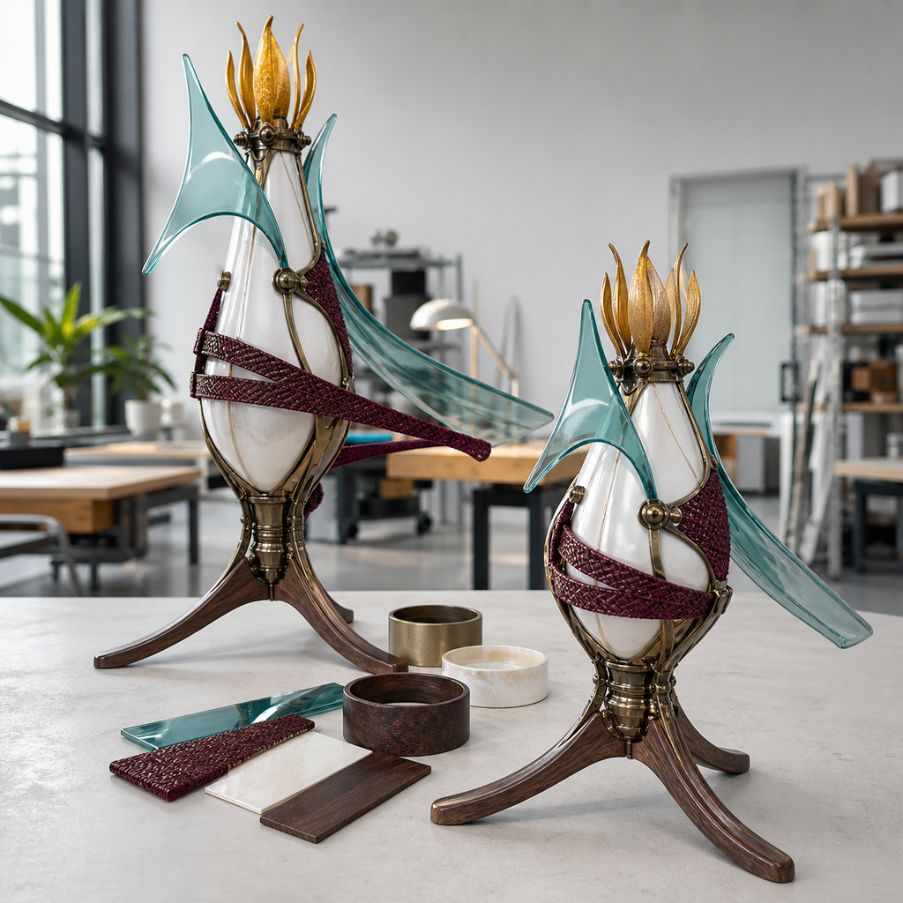
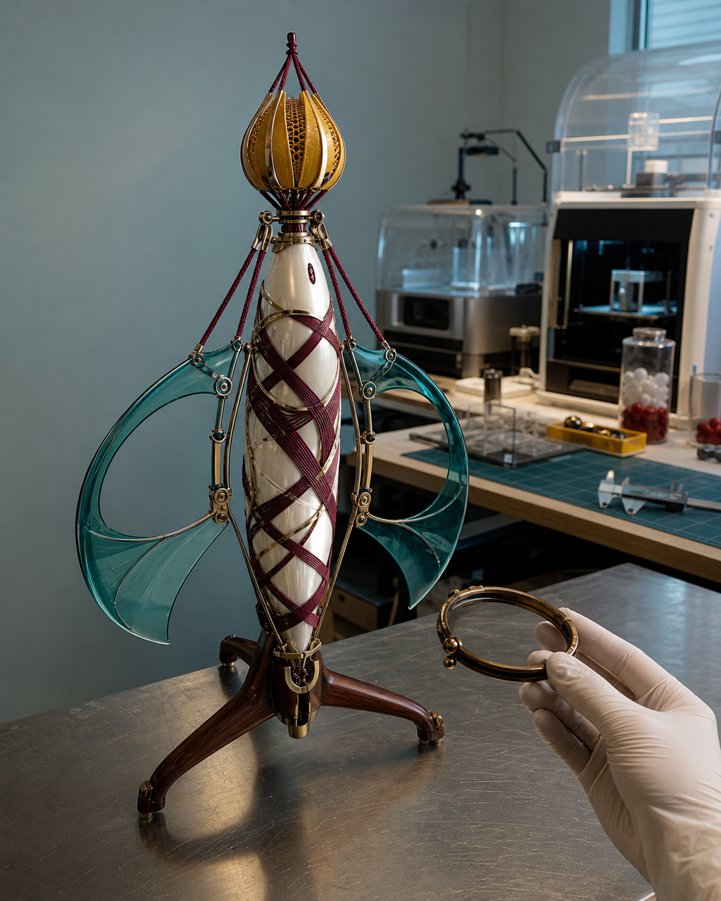

Day 1 实战演示：从作品 / 关键词到可做方案
从作品或关键词出发，最容易被跳过的一步，是把输入变成一组可以制造、可以检查、也可以退回的决定。已有作品可能已经有成熟正面形象，却缺少侧背体积、真实尺寸、连接方式或公开权限；关键词可能给出气质和故事，却没有确定一个对象、一个用途和一条可执行范围。两类输入都不能直接等同于可做方案。 如果演示只展示工具如何快速生成图或模型，观众看到的是一次操作，而不是 Day 1 的判断。对象、用途、尺寸、识别特征、结构风险和版权边界没有同时锁定，Day 2 就会在多个版本之间反复试错；薄片、悬空、遮挡、重心与分件问题也会被推迟到修模和打印阶段，增加返工并挤占五天排程。
具体问题
从作品或关键词出发，最容易被跳过的一步，是把输入变成一组可以制造、可以检查、也可以退回的决定。已有作品可能已经有成熟正面形象，却缺少侧背体积、真实尺寸、连接方式或公开权限；关键词可能给出气质和故事，却没有确定一个对象、一个用途和一条可执行范围。两类输入都不能直接等同于可做方案。
如果演示只展示工具如何快速生成图或模型，观众看到的是一次操作，而不是 Day 1 的判断。对象、用途、尺寸、识别特征、结构风险和版权边界没有同时锁定，Day 2 就会在多个版本之间反复试错；薄片、悬空、遮挡、重心与分件问题也会被推迟到修模和打印阶段，增加返工并挤占五天排程。
核心判断
可做方案的核心不是画面精细度，而是约束是否互相成立。一个对象要能说明主要用途和外接尺寸，正面、侧面、背面与材质输入要描述同一身份，核心识别特征要能在真实尺度下保留，重心、落地点、厚度、连接与拆件要有明确处理方向，来源与公开范围也要对应到受控版本。
Gate 1 应输出明确结论，而不是模糊的“差不多可以”。结论只有三类：资料和范围齐全，可以冻结版本进入 Day 2；关键视图、权限或结构信息缺失，列出待补项后暂停；风险超出五天边界，触发备选或降级方案。主方案、备选方案和降级方案都必须写明保留什么、舍弃什么以及何时切换。
步骤或标准
可按以下六项完成一次从输入到 Gate 1 决定的演示。每项都要留下可复核文件、尺寸、标记或结论，不能只停留在口头描述。
- 建立双入口清单：已有 IP / 角色资产者列出现有原画、设定、模型、版本和版权状态；只有想法、草图或初步设定者只保留一个故事核心、三至五个关键词、一个使用场景与一个希望做成的物品。
- 锁定单一对象与用途：从输入中选一个主对象，明确完整立体、半身、浮雕或局部样等实体方向，并记录预计外接高度、宽度、深度与主要观看方向。
- 补齐可检查输入：核对正面、侧面、背面、底部、遮挡处和材质方向；缺失位置进入待补清单，不让生成工具替代结构或权利事实。
- 执行制造预判：按真实尺度检查薄片、悬空件、连接面积、重心、落地点、拆件线、支撑空间与装配顺序，并为高风险部位写出加厚、合并、贴近主体、独立分件或删除决定。
- 形成主 / 备 / 降级方案：主方案保留核心识别点，备选方案降低姿态或连接风险，降级方案改为局部验证、半身、浮雕或更小实体；每套都写明触发条件、保留项和暂不处理项。
- 完成 Gate 1 决定：逐项核对项目卡、受控输入、尺寸、结构预判、版权与公开边界及三套方案；齐全则冻结版本进入 Day 2，缺项则明确补什么、由谁确认或降到何种范围。
常见错误
以下错误会让“实战演示”看起来进展很快，却无法留下可交接的方案。
- 把直播演示当成即时造型表演，只追求现场出现一张漂亮图；后果是用途、尺寸和结构约束没有落档，演示结束后仍没有可进入 Day 2 的受控输入。
- 同时保留多个角色、用途和尺寸方向；后果是判断标准不断变化，主方案与降级方案无法比较，五天排程被范围漂移占用。
- 用工具自动补齐背面、遮挡结构或素材来源；后果是未经确认的信息被固化进模型，制造风险与版权责任都无法追溯。
- 只口头说有备选方案，不写触发条件和暂不处理项；后果是遇到结构或时间限制时只能临时删改，版本交接失去一致性。
- 把 Gate 1 放行描述成模型或成品已经完成；后果是观众误解课程阶段与五天完成度，也会掩盖 Day 2 的修模和 Gate 2 可打印检查。
与五天课程的关系
当天主题对应 Day 1“方向判断与结构转译”和 Gate 1。已有 IP / 角色资产者从现有作品中筛选一个主对象，只有想法、草图或初步设定者从故事、关键词和使用场景形成第一版输入；两类起点随后共同锁定用途、尺寸、正侧背与材质、结构风险、版权与公开边界，以及主 / 备 / 降级方案。Gate 1 据此作出放行、待补或降级决定。
Gate 1 通过后的下一阶段是 Day 2：先用受控输入获得 AI 三维初模，再在 Nomad 中人工修正比例、破面、重叠、悬空、过薄与不稳定部位，拆分主体、底座和配件，并准备 GLB、STL 与 Gate 2 可打印检查。若 Day 2 发现输入身份或范围发生变化，应返回 Gate 1 更新记录，而不是让版本静默漂移。
事实 / 案例 / 完成度边界
本文依据公开课程基线中的两类起点、Day 1、Gate 1 和 Day 2 交接要求整理。文中的检查顺序和当天计划的四张“风核织塔”图片都是课程方向示意，用于解释从作品或关键词收敛到可做方案的方法；它们不是学员案例、真实课堂、真实委托、已发生直播记录或已经完成的项目成果。真实案例只有在来源、授权、过程文件、实物与完成状态均可核验时才会单独标注，示意图不能替代真实案例。
五天内的目标是按项目实际情况形成第一版可继续发展的受控输入、模型文件、灰模或局部样、表达资料与发布结构，不是让所有项目达到相同精度。完成度受输入成熟度、结构复杂度、尺寸、材料、设备、打印排程和修正次数影响；课程不承诺人人完成商业级精修、一次打印成功、固定实体件数、正式包装印刷、批量生产、正式展览、授权成交或销售结果。
报名入口
如果你已有 IP / 角色资产，可以在报名资料中说明现有原画、角色设定、三维文件或系列作品，版权状态、希望做成的实体类型、目标尺寸，以及目前最不确定的视图或结构部位。无需先自行完成整条建模、打印和发布链。
如果你只有想法、草图或初步设定，也可以如实填写故事核心、关键词、参考方向、希望做成的物品和现有设备，不需要先补成成熟原画或模型。两类起点都从 Day 1 / Gate 1 的范围、输入与边界判断开始。公开报名地址：https://wj.qq.com/s2/27296919/9499/


长期招生｜青岛｜3–5 天短训｜评估后预约跟班｜每班最多 10 人。查看当前学习方案与费用
填写报名资料 →